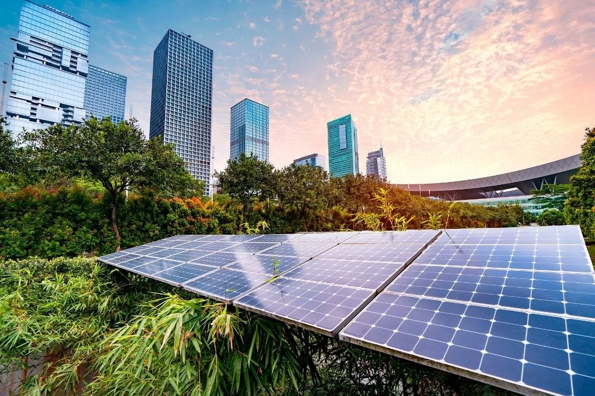

Make cities and human settlements inclusive, safe, resilient and sustainable. Cities represent the future of global living. The world's population reached 8 billion on 2022 over half living in urban areas. Goal 11 is focused on cities, as more than half of the world's population lives in them. Cities are hubs for ideas, commerce, culture, science, productivity, social development and much more; they have enabled people to advance socially and economically. However, many challenges exist to maintaining cities in a way that continues to create jobs and prosperity without straining land and resources.
Space technologies are utilised for:
•Urban planning, to pinpoint structures and reference points for cadastral and urban planning purposes
•Smart Cities, through the application of Global Navigation Satellite Systems, Earth Observation and Satellite Telecommunications
•Improvement of city services, such as smart waste management systems
•Air quality monitoring
•Disaster management
•Disaster management
•Search and rescue operations